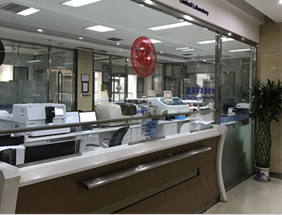
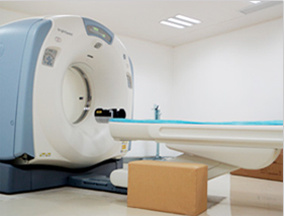
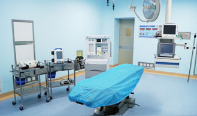
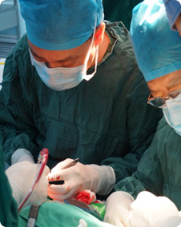
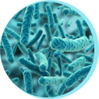
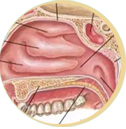

治鼻炎需分型：再对症治疗
- 急性鼻炎
- 干燥性鼻炎
- 慢性单纯性鼻炎
- 慢性肥厚性鼻炎
- 萎缩性鼻炎
- 药物性鼻炎
- 干酪性鼻炎
- 变态反应性鼻炎
治鼻炎可能需要做的检查
-  CT检查
-  过敏原筛查
- 过敏原筛查
- 过敏原筛查
- 过敏原筛查
- 过敏原筛查
注：具体检查项目需专家面诊后确定，如：CT检查适用于有头疼等症状的患者，以便筛查患者是否伴有鼻窦炎、鼻中隔偏曲的病情。
首大中西医结合治疗
根据患者病情灵活诊疗，包括：保守治疗、物理治疗、药物治疗、脱敏治疗、sa阻断手术治疗等诊疗手段。 具体诊疗方法需医生面诊检查后确定。
西医外治
物理诊疗+手术治疗+药物治疗
中医内调
中医理疗+中医药物治疗
首大疗效：专家保障
查看更多 ︾
论医院实力 Our Resource
医疗资源的数量和质量是评价一家医院综合实力的关键，目前，我国医疗资源分布不均衡，北京的医疗资源比河北 更为充足、质量更高，即使医院等级相同，河北与北京相比，其整体实力也有一定差距。


论医生能力
Our Doctors' Capability北京接诊的多为来自全国各地的耳鼻喉疑难患者，医生整体临床经验高，而外阜接诊多为本省市患者，接诊疑难疾病患者的机会较北京少，同一职称的医生，外阜地区与北京相比，其临床经验水平也有一定差距.
引起鼻炎的原因

- 1 病毒感染
- 病毒感染是其首要病因，或在病毒感染的基础上继发细菌感染。
- 2 遗传因素
- 有变态反应家族史者易患此病。

- 3 鼻黏膜易感性
- 易感性的产生源于抗原物质的经常刺激，但其易感程度则视鼻黏膜组织中肥大细胞、嗜碱性粒细胞的数量和释放化学介质的能力。

- 4 抗原物质
- 引起本病的变应原按其进入人体的方式分为吸入性和食物性两大类。。
鼻炎的常见症状
-
鼻塞
-

多涕
-
嗅觉下降或消失
-
头痛、头昏 慢性鼻窦炎多表现为头沉重感。
-
头痛、食欲不振、易疲倦、记忆力减退及失眠等。